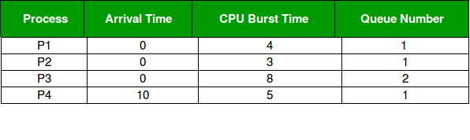

Prerequisite : CPU Scheduling
It may happen that processes in the ready queue can be divided into different classes where each class has its own scheduling needs. For example, a common division is a foreground (interactive) process and background (batch) processes.These two classes have different scheduling needs. For this kind of situation Multilevel Queue Scheduling is used.Now, let us see how it works.
Ready Queue is divided into separate queues for each class of processes. For example, let us take three different types of process System processes, Interactive processes and Batch Processes. All three process have there own queue. Now,look at the below figure.

All three different type of processes have there own queue. Each queue have its own Scheduling algorithm. For example, queue 1 and queue 2 uses Round Robin while queue 3 can use FCFS to schedule there processes.
Scheduling among the queues : What will happen if all the queues have some processes? Which process should get the cpu? To determine this Scheduling among the queues is necessary. There are two ways to do so –
- Fixed priority preemptive scheduling method – Each queue has absolute priority over lower priority queue. Let us consider following priority order queue 1 > queue 2 > queue 3.According to this algorithm no process in the batch queue(queue 3) can run unless queue 1 and 2 are empty. If any batch process (queue 3) is running and any system (queue 1) or Interactive process(queue 2) entered the ready queue the batch process is preempted.
- Time slicing – In this method each queue gets certain portion of CPU time and can use it to schedule its own processes.For instance, queue 1 takes 50 percent of CPU time queue 2 takes 30 percent and queue 3 gets 20 percent of CPU time.
Example Problem :
Consider below table of four processes under Multilevel queue scheduling.Queue number denotes the queue of the process.

Priority of queue 1 is greater than queue 2. queue 1 uses Round Robin (Time Quantum = 2) and queue 2 uses FCFS.
Below is the gantt chart of the problem :

At starting both queues have process so process in queue 1 (P1, P2) runs first (because of higher priority) in the round robin fashion and completes after 7 units then process in queue 2 (P3) starts running (as there is no process in queue 1) but while it is running P4 comes in queue 1 and interrupts P3 and start running for 5 second and after its completion P3 takes the CPU and completes its execution.